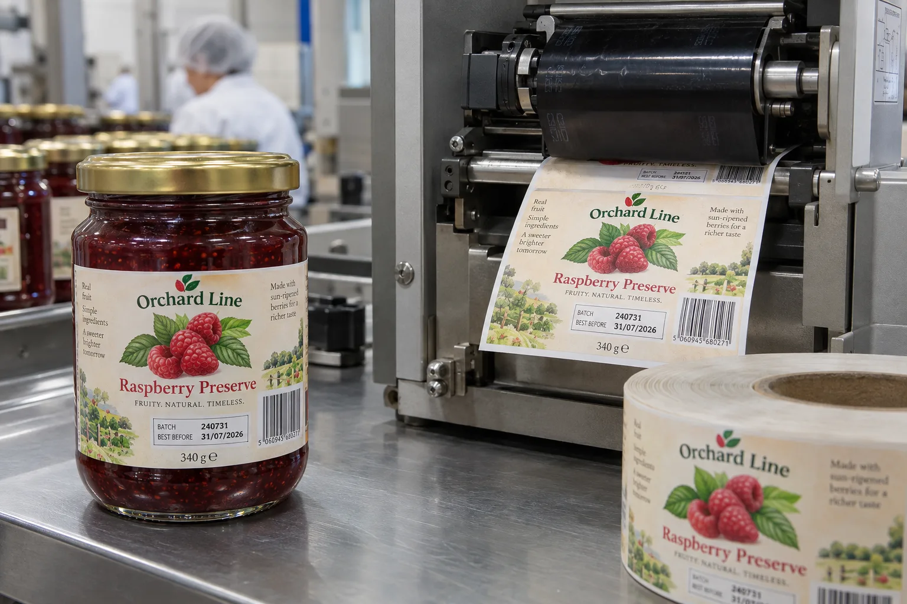

The colored label and the later code are one specification
A food brand may want one attractive printed label for several batches, then add the lot and best-before information at packing. That can reduce label inventory. I would still ask which printer and ribbon will touch the label before promising the finish. A film laminate that looks lovely on the shelf can be a poor surface for a particular overprint combination.
Zebra describes preprinted labels receiving variable information later in a barcode printer. Its printer guidance also makes the ribbon and media match explicit. The equipment supplier's settings remain specific to the actual printer.
Two packing teams, different risks
Consider a composite jam brand packing small batches by hand. It prints one full-color raspberry label and adds a short date field at the end of the day. Its main risk is changing a decorative varnish or label stock without testing the desktop printer again. A small retained sample from each artwork revision may save a messy packing shift.
A co-packer with several products on one line faces a different problem. It may have the correct printable label but the wrong data file or the wrong ribbon after a changeover. I would make the approval include the data workflow, first-off check and reconciliation, not merely a successful single test print.
Reserve a printable zone in the artwork
Define which fields will be added later, the largest expected value and the exact area available for them. Keep decorative ink, heavy varnish and seams out of the zone unless that exact construction has passed a test. Put the zone where an operator can inspect it on the finished jar without rotating past a fold or glass shoulder. If a barcode is overprinted, confirm symbol placement and quality with the receiving partner.
GS1 advises that barcode placement and quality depend on the scanning environment and that symbols should not be hidden by folds or other packaging. A phone scan is a quick check, not a substitute for a defined acceptance method.
Trial the whole chain
| Control | Question for the test |
|---|---|
| Label face and finish | Does the ribbon mark the final surface cleanly? |
| Printer and ribbon | Is print density stable at intended speed? |
| Data template | Do longest dates and lot codes fit? |
| Filled package | Is the print readable after normal handling? |
| Changeover | Can the team identify a wrong SKU before bulk packing? |
Do not publish the fictional codes shown in this article's illustration as product data. The food business must approve actual wording, date logic, barcode identifiers and market-specific requirements.
Our buying view
Do not make the printer solve an artwork problem
It is tempting to quote the glossy stock the brand likes and let the line adjust heat until the code appears. I would ask for the printer model and ribbon first. If a less glamorous finish gives a cleaner, more stable code, that is a better purchasing decision than a roll that only works during a slow demonstration.
Send this brief before ordering
- Printer model, ribbon specification and expected speed.
- Final label face, coating or laminate and overprint area.
- Field names, longest values and who owns the source data.
- Actual containers and handling conditions for the trial.
- First-off and changeover checks agreed with the co-packer.
For the broader printing-method choice, read direct thermal versus thermal transfer. For unique data at scale, see our variable-data label guide.
Frequently asked questions
Can any finished label be thermal-transfer overprinted?
No. Coating, laminate, ink coverage and ribbon must be compatible with the printer. Request a sample on the final construction.
Should the date box be left completely white?
It needs enough clean contrast and an appropriate printable surface, but it can remain part of a fully designed label. Prove readability and durability on production-like samples.
Who approves the variable data?
The brand or packing operation should own the source data, format, validation and change control; the label printer should not invent dates or lot codes.
Related buyer guides
Review your label specification
Send package photos, label dimensions, material details, quantity and application conditions. Include good and failed samples where possible so the discussion starts with evidence.